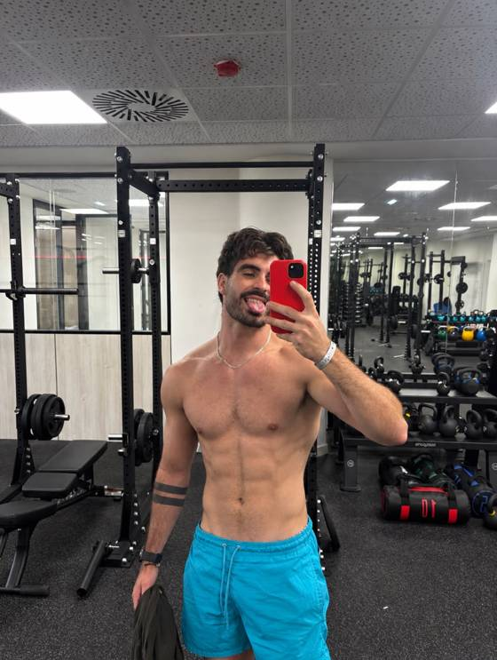
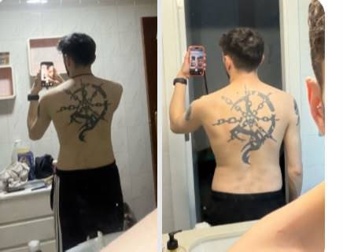
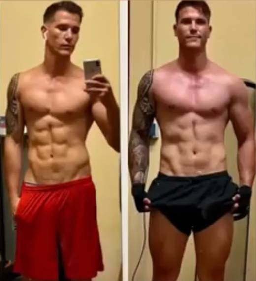
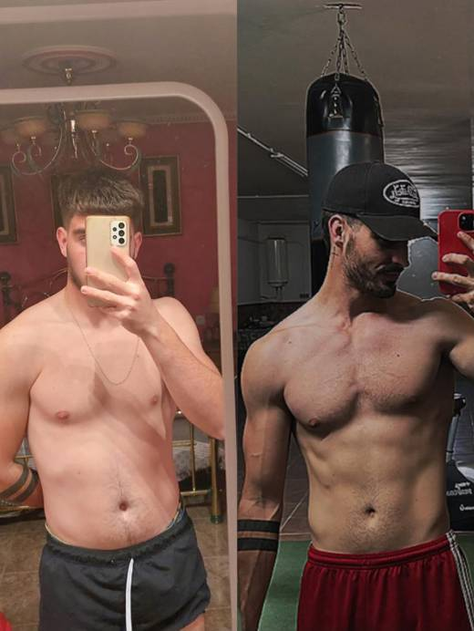
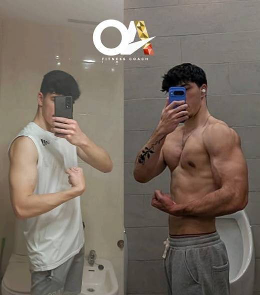

Resultados
Si no consigues el objetivo en el tiempo establecido, te acompañamos hasta conseguirlo.
Te ayudo a ganar 7-10 kg o más en tiempo récord, sin ganar barriga ni comer hasta reventar con el método MAC-OS.
Paso 1 — Mira el vídeo
6 minutos. Te explico exactamente cómo funciona el método.
Verlo también en YouTube
Doble garantía. Resultados por contrato: si no lo consigues en el tiempo establecido, te acompaño hasta que lo consigas.
Paso 2 — Agenda tu llamada ahora
Quiero mi cambio físicoLlamada de diagnóstico, sin compromiso. Plazas limitadas cada semana.
La llamada
Una vez analizado todo, valoraremos si puedo ayudarte y, si es así, te explicaremos cómo conseguirlo.
Filtro
Cuéntame tu caso por WhatsApp y te digo en el momento si el método encaja contigo.
El método
Transformación mental, no solo física. Dejarás de sentirte culpable o frustrado y volverás a sentirte cómodo contigo mismo.
Nutrición adaptada a tus horarios, 100% personalizada. Sin comer hasta reventar.
Entrenamiento adaptado a tus horarios. Aumenta tu fuerza y confianza.
Acompañamiento diario. Resolución de dudas, revisiones por videollamada y apoyo constante para que no falles en tus objetivos.
Garantía
Doble garantía de resultados bajo contrato legal: te acompaño hasta que lo consigas.
Si no consigues el objetivo en el tiempo establecido, te acompañamos hasta conseguirlo.
Adaptamos todo a tu estilo de vida.
El coach

Soy Óscar, creador del método MAC-OS y coach nutricional y deportivo.
Gané 15 kg de músculo y recuperé mi confianza tras llevar toda una vida siendo muy flaco y con problemas de autoestima…
Tras superarlo, me formé para ayudar a otras personas que tienen problemas parecidos.
Desde los 17 años en el mundo del fitness hasta ahora he podido ayudar a decenas a conseguir una transformación.
Con mi experiencia y conocimientos, sé bien lo que funciona y soy capaz de garantizarte resultados con mi programa y te acompaño hasta que lo consigas.
Mi único objetivo es ayudarte a eliminar la delgadez, aumentar tu confianza y autoestima y logres conseguir tu mejor versión física.




Si has leído hasta aquí, ya sabes si esto es para ti. Reserva tu hueco o escríbeme directamente.